작업 흐름
- 입력
- 향해 그릴 그림 한 장(레퍼런스 모드), 또는 브리프로 직접 설계할 주제 하나(아침 커피 같은 물건이나 단순한 장면)
- 브리프
- 한 줄 요약, 구도, 캐릭터나 물건의 디자인, 재질별 기본색 · 그림자색 · 하이라이트색, 주광과 림 라이트의 색과 방향, 마무리 단계에서 더할 분위기, 단계별 시간을 적은
BRIEF.md - 그리기
- 파란 러프, 두께가 변하고 덧그어지는 펜 선화(머리카락 다발과 결 · 애니풍 눈 · 해칭 헬퍼), 붓으로 칠하는 밑색, 보이는 영역에만 칠해지는 곱하기 그림자와 광원 방향 그라데이션, 스크린 하이라이트와 림 라이트, 빛 · 색보정 · 보케 · 종이 결 같은 마무리. 레퍼런스 모드에서는 에이전트가 그림을 보고 적은 구조 · 재질 올가미 · 그리는 순서와, 그림에서 잰 펜 획과 굵기 · 재질별 밑색 · 명암 덩어리 · 에어브러시 블렌딩 · 세부 붓질 · 선 색
- 확인
- 단계 끝 스틸 채점 기준, 모든 항목이 자국을 남기는지, 칠이 갑자기 나타나지 않는지, 펜이 캔버스 안에 있는지, 결정성, 캐릭터의 얼굴 방향과 목 · 어깨 한계 검사와 바디 시트(선화 + 표시점 · 완성 · 좌우 반전)
- 출력
- 30fps 1080×1220 MP4, 칩을 누르면 그 단계로 건너뛰는 라이브 페이지
cd speedpaint-replay/examples/reference-ginkgo
node ../../scripts/render.mjs index.html --stages --scale .5
node ../../scripts/render.mjs index.html --sheet 24 --scale .5
node ../../scripts/check.mjs index.html
node ../../scripts/render.mjs index.html --workers 4
node ../../scripts/new-piece.mjs ../../../my-piece
node ../../scripts/from-image.mjs picture.png --plan plan.json --out ref.js요구 사항: Node + Playwright Chromium, ffmpeg. 네트워크와 GPU가 필요 없습니다(다 그린 부분은 레이어에 캐시해서 51초 영상 1,518프레임을 CPU 4코어로 약 30초). 단계별 순서는 SKILL.md에 있습니다.
샘플
레퍼런스 모드 「은행잎 저녁」과 「벚꽃 노을」의 단계들, 그리고 브리프로 설계한 시작 그림 「아침 커피」입니다. 카드를 누르면 새 탭에서 그 순간부터 메이킹이 재생되고, 브라우저가 선과 색을 직접 그립니다.
레퍼런스 모드 · 은행잎 저녁 1080×1220 · 51초 · 2048 px 레퍼런스
일레븐랩스로 2048×2048로 만든, 선이 또렷한 그림(가로등 아래 안경 쓴 소년)을 썼습니다. 그림에 선이 없는 경계(하늘을 배경으로 한 검은 머리, 목도리, 코트)는 재질이 만나는 자리를 따라 윤곽선으로 그립니다. 해상도가 높은 그림에서는 코트와 안경, 얼굴 선이 길고 깨끗하게 나옵니다.
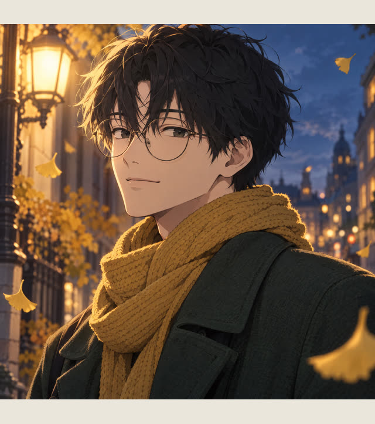
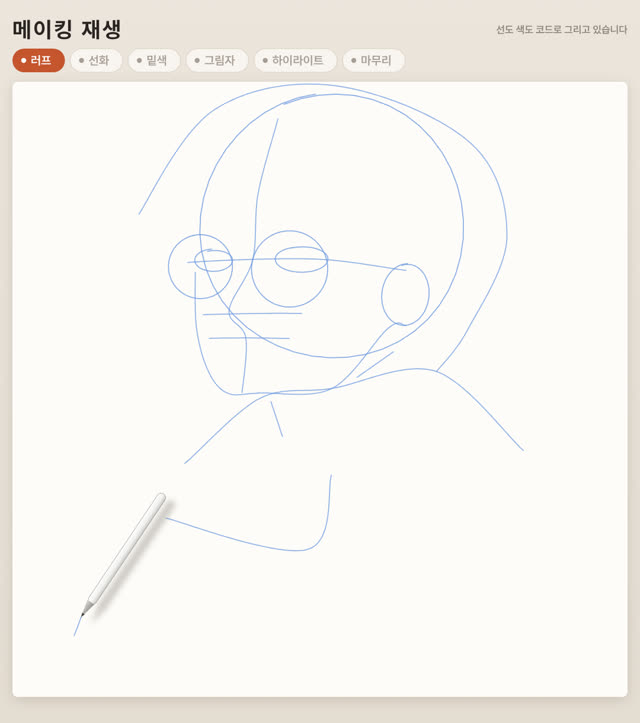
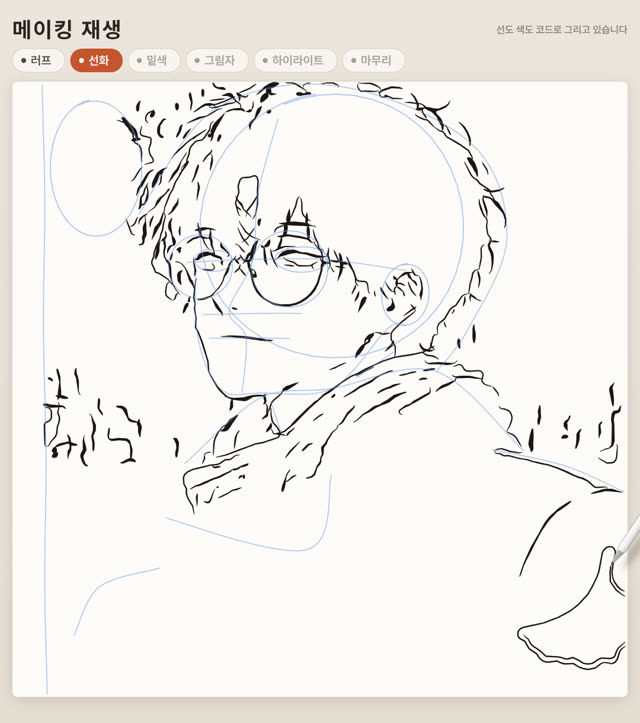
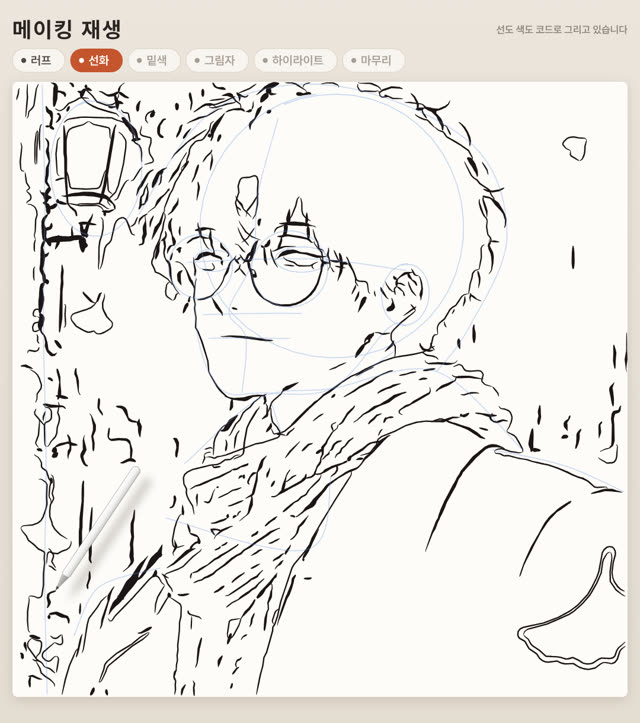
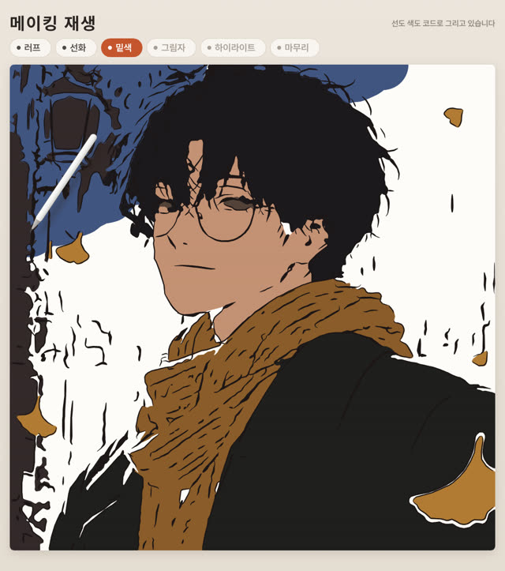
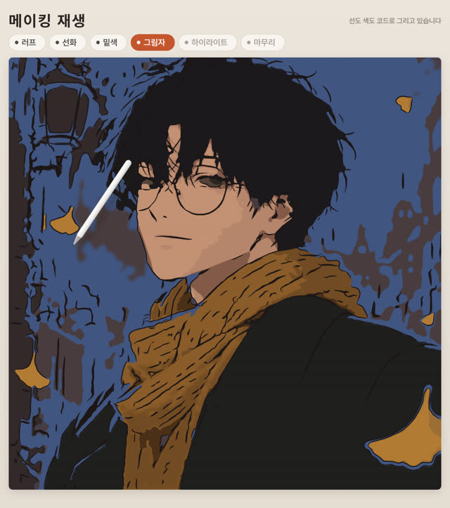
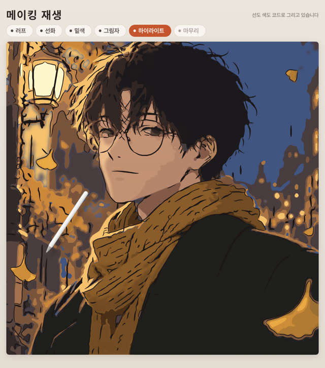
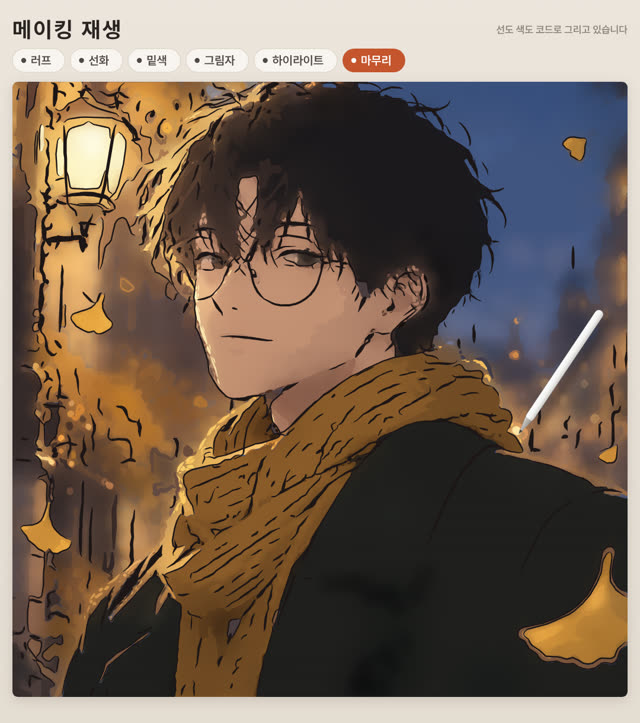
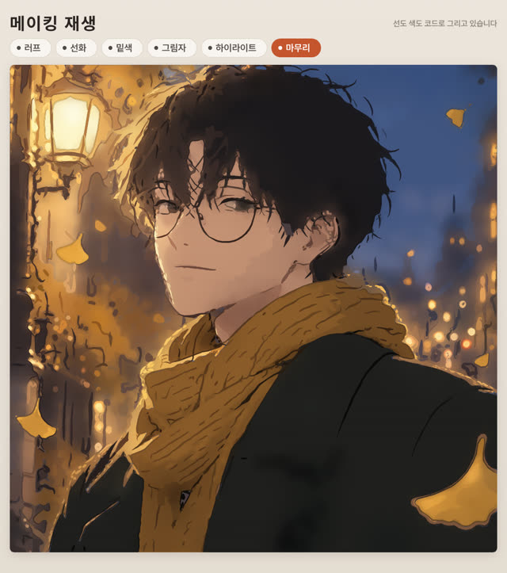
레퍼런스 모드 · 벚꽃 노을 1080×1220 · 51초 · 그림 한 장을 사람이 그리는 순서로
그림 한 장을 주면, 그 그림이 그려지는 과정을 사람이 디지털 페인팅을 하는 순서대로 보여 줍니다. 에이전트가 그림을 보고 구조(머리 원 · 중심선 · 눈높이선), 재질별 올가미(피부 · 머리 · 옷 · 배경), 그리는 순서(눈 → 얼굴 → 머리 → 옷)를 plan.json에 적고, from-image.mjs가 선의 위치와 굵기, 재질의 정확한 경계, 명암 덩어리와 그 가장자리의 부드러움, 블렌딩, 세부 묘사를 잽니다. 여기서는 일레븐랩스(gpt-image-2.5-sunburst)로 만든 그림을 썼고, 프롬프트는 예제의 BRIEF.md에 있습니다.
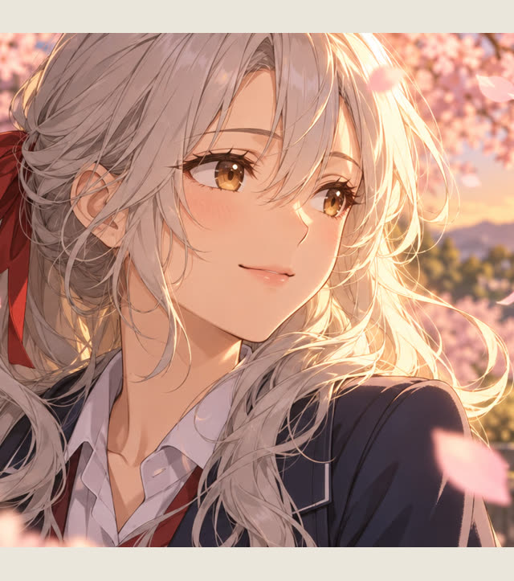
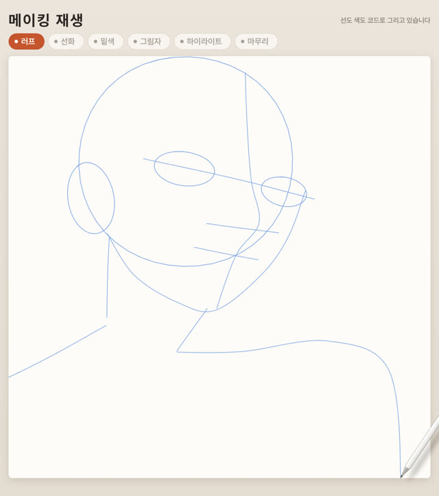
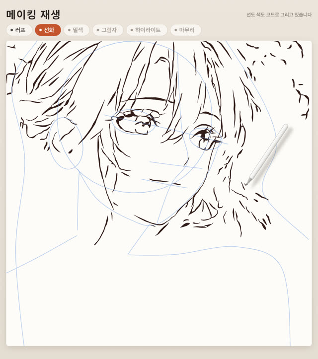
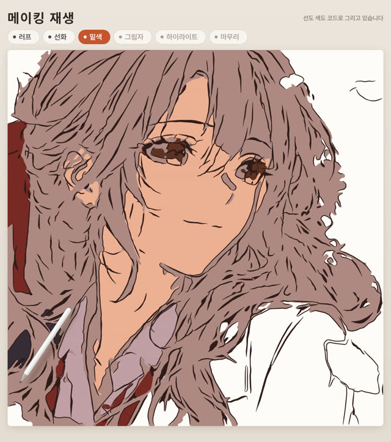
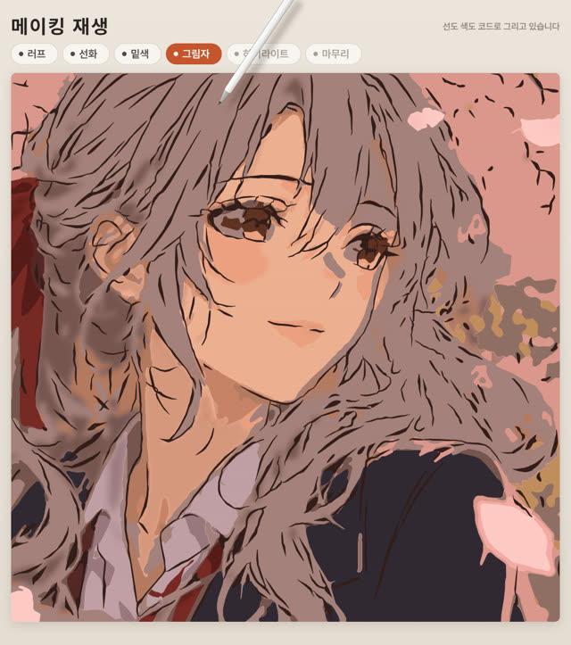
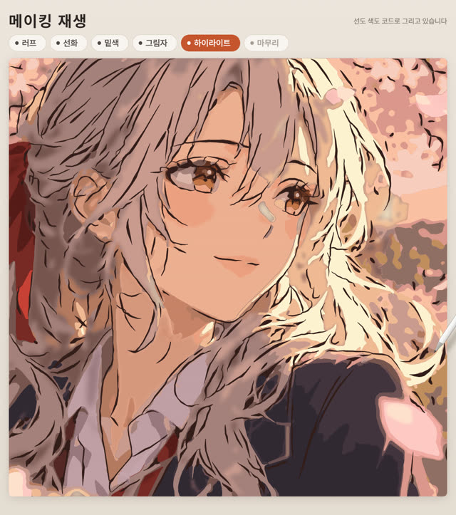
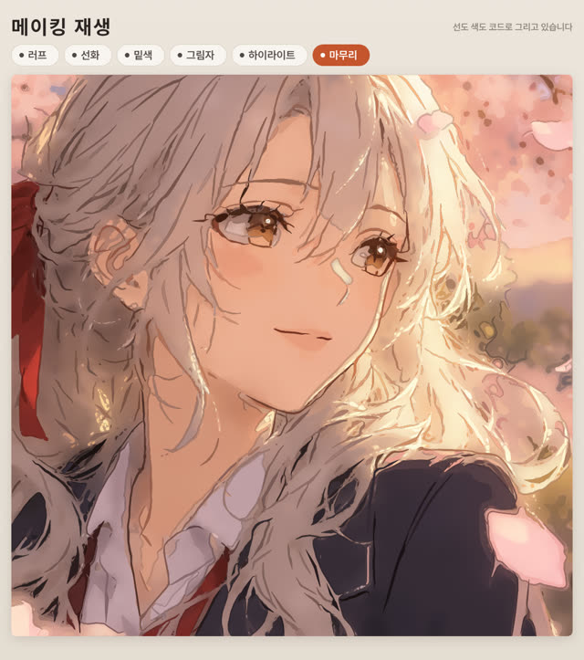
출발점 새 그림을 시작하는 파일
new-piece.mjs가 복사하는 28초짜리 시작 그림 「아침 커피」입니다. 창으로 아침 햇빛이 드는 벽 앞, 나무 탁자 위의 머그와 받침, 김을 그립니다. 사람이 없는 물건 그림도 같은 여섯 단계로 그립니다.
실제 작품
이 레포에서 만든 스킬입니다. 余白とインク(@yohakutoink)가 X에 올린 47초 영상(코드로 그리게 한 애니풍 초상화가 「メイキング再生」 페이지에서 파란 머리 원부터 빛이 든 완성 그림까지 단계별로 그려지는 영상)이 출발점입니다. 이 스킬은 그 형식(단계 칩이 있는 페이지, 여섯 단계 각각의 모양과 움직임, 그리는 펜)만 가져오고, 직접 만든 캔버스 엔진으로 그립니다. 원본의 초상화와 인물은 쓰지 않았고, 예제와 시작 그림의 디자인과 그림은 모두 이 레포의 것입니다.
링크
- SKILL.md 워크플로
- 폴더 lib · scripts · references · templates · examples
- README.md 빠른 시작
- references/SOURCE.md 원본 게시물의 구성, 가져온 것과 가져오지 않은 것
- references/BRIEF.md 브리프 틀과 스틸 채점 기준
- references/LOOK.md 페이지, 여섯 단계, 시간, 색
- references/DRAWING.md 항목으로 그림 그리기: API, 순서, 레이어, 얼굴, 머리카락
- references/REFERENCE.md 레퍼런스 모드: plan.json 쓰는 법, 재는 방법, 판단 기준
- references/BODY.md 얼굴 방향과 목 · 어깨 한계 검사, 바디 시트
- references/LESSONS.md 겪은 문제와 해결